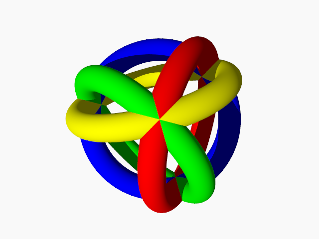

Drawing a torus with POV-Ray
Posted on June 2, 2018
by Stéphane Laurent
It is easy to draw a torus with POV-Ray. What we propose here, is to draw a torus such that its equator passes by three given points.
The include file analytical_g.inc made by Friedrich A. Lohmueller provides a macro which does this task, namely the macro Circle_Line_out. However I tested it and I noticed that the rendering is very slow. With the macro I wrote, provided below, the rendering is not slow.
// -------------------------- the Torus macro ------------------------------- //
// 3x3 matrix Functions ----------------------------------------------------
#macro det(A)
- A[0].z*A[1].y*A[2].x
+ A[0].y*A[1].z*A[2].x
+ A[0].z*A[1].x*A[2].y
- A[0].x*A[1].z*A[2].y
- A[0].y*A[1].x*A[2].z
+ A[0].x*A[1].y*A[2].z
#end
#macro transpose(A)
array[3] { < A[0].x,A[1].x,A[2].x >,
< A[0].y,A[1].y,A[2].y >,
< A[0].z,A[1].z,A[2].z > }
#end
#macro Inverse(A)
#local d=det(A);
array[3] {
< -A[1].z*A[2].y+A[1].y*A[2].z,
A[0].z*A[2].y-A[0].y*A[2].z,
-A[0].z*A[1].y+A[0].y*A[1].z > / d,
< A[1].z*A[2].x-A[1].x*A[2].z,
-A[0].z*A[2].x+A[0].x*A[2].z,
A[0].z*A[1].x-A[0].x*A[1].z > / d,
< -A[1].y*A[2].x+A[1].x*A[2].y,
A[0].y*A[2].x-A[0].x*A[2].y,
-A[0].y*A[1].x+A[0].x*A[1].y > / d
}
#end
#macro mult(A,p)
< A[0].x*p.x+A[0].y*p.y+A[0].z*p.z,
A[1].x*p.x+A[1].y*p.y+A[1].z*p.z,
A[2].x*p.x+A[2].y*p.y+A[2].z*p.z >
#end
// Transformation matrix ---------------------------------------------------
#macro Matrix(p)
#local a = p.x;
#local b = p.y;
#local c = p.z;
#if(a=0 & c =0)
matrix < 1, 0, 0,
0, 1, 0,
0, 0, 1,
0, 0, 0 >
#else
#local length = vlength(p);
#local aa = a/length;
#local bb = b/length;
#local cc = c/length;
#local n = <aa, bb, cc>;
#local s = sqrt(aa*aa+cc*cc);
#local aaa = aa/s;
#local ccc = cc/s;
#local uu = < -ccc, 0, aaa>;
#local vv = vcross(n,uu);
matrix < -ccc, 0, aaa,
aa, bb, cc,
vv.x, vv.y, vv.z,
0, 0, 0 >
#end
#end
// plane passing by points p1, p2, p3 --------------------------------------
#macro Plane1(p1,p2,p3)
#local xcoef = (p1.y-p2.y)*(p2.z-p3.z)-(p1.z-p2.z)*(p2.y-p3.y);
#local ycoef = (p1.z-p2.z)*(p2.x-p3.x)-(p1.x-p2.x)*(p2.z-p3.z);
#local zcoef = (p1.x-p2.x)*(p2.y-p3.y)-(p1.y-p2.y)*(p2.x-p3.x);
#local Offset = p1.x*xcoef + p1.y*ycoef + p1.z*zcoef;
<xcoef, ycoef, zcoef, Offset>
#end
// plane passing by p & perpendicular to norm ------------------------------
#macro Plane2(p,norm)
#local Offset = p.x*norm.x+p.y*norm.y+p.z*norm.z;
<norm.x, norm.y, norm.z, Offset>
#end
// Circumcenter and circumradius of the circle passing by p1,p2,p3 ---------
#macro CircleCenter(p1,p2,p3)
#local p12 = (p1+p2)/2;
#local p23 = (p2+p3)/2;
#local v12 = p2-p1;
#local v23 = p3-p2;
#local plane1 = Plane1(p1,p2,p3);
#local plane2 = Plane2(p12,v12);
#local plane3 = Plane2(p23,v23);
#local A = array[3] { <plane1.x, plane2.x, plane3.x>,
<plane1.y, plane2.y, plane3.y>,
<plane1.z, plane2.z, plane3.z> };
#local b = <plane1.t, plane2.t, plane3.t>;
#local center = mult(Inverse(transpose(A)),b);
#local op1 = p1-center;
#local r = vlength(op1);
<center.x, center.y, center.z, r>
#end
// Torus passing by three points -------------------------------------------
#macro Torus(p1,p2,p3,r,Texture)
#local centre = CircleCenter(p1,p2,p3);
#local center = <centre.x,centre.y,centre.z>;
#local R = centre.t;
#local plane1 = Plane1(p1,p2,p3);
torus {
R, r
texture { Texture }
Matrix(<plane1.x, plane1.y, plane1.z>)
translate center
}
#end
// end of Torus macro ------------------------------------------------------- //Let me give an example now. I take a tetrahedron and I draw the torus passing by the three vertices of a face, for each of the four faces.
#version 3.7;
global_settings { assumed_gamma 1 }
#default{ finish{ ambient 0.1 diffuse 0.9 }}
#include "colors.inc"
#include "textures.inc"
// Camera ----------------------------------------------------------------------
camera {
location <7,7,-7> scale 0.4
look_at 0
angle 45
}
// Background ------------------------------------------------------------------
background { color Gray95 }
// Light source ----------------------------------------------------------------
light_source { <300, 300, -1000> White }
// tetrahedron vertices --------------------------------------------------------
#declare phi = (1+sqrt(5))/2;
#declare a = 1/sqrt(3);
#declare b = a/phi;
#declare c = a*phi;
#declare vertices = array[4]
{ < a, a, -a>,
<-c, 0, -b>,
< b, -c, 0>,
< 0, b, c> };
// tetrahedron faces -----------------------------------------------------------
#declare tetra = array[4]
{ <3, 2, 0>,
<3, 1, 2>,
<1, 0, 2>,
<1, 3, 0> };
// draw tori -------------------------------------------------------------------
#declare Radius = 0.15;
union{
Torus(vertices[tetra[0].x],vertices[tetra[0].y],vertices[tetra[0].z],
Radius, texture { pigment { color Red } })
Torus(vertices[tetra[1].x],vertices[tetra[1].y],vertices[tetra[1].z],
Radius, texture { pigment { color Blue } })
Torus(vertices[tetra[2].x],vertices[tetra[2].y],vertices[tetra[2].z],
Radius, texture { pigment { color Green } })
Torus(vertices[tetra[3].x],vertices[tetra[3].y],vertices[tetra[3].z],
Radius, texture { pigment { color Yellow } })
}